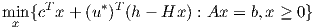
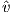
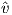
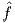
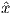

satisfying all of the following conditions:
- {x ∈ IRn : Ax = b,x ≥ 0} is bounded
- (D) has a unique optimal solution (y*,u*)
- A and H each has one row
- every optimal basic feasible solution to the Lagrangian subproblem
 violates Hx = h.
Let
Is 0 a subgradient of Θ(u*)?
Solution:
Almost any problem will work. We choose the primal-dual pair
The unique optimal dual solution is y* = 0, u* = 0. The Lagrangian subproblem with u* is
which has optimal basic feasible solutions (0,2,0) and (0,0,4), neither of which satisfies Hx = h.
We have:
Since 1 and -1 are both subgradients of Θ(u*), any convex combination of them is also. So, YES, 0 is a subgradient.
Alternatively, we can argue that x = (0,1,2) also solves the Lagrangian subproblem, and this point has Hx = h, so again YES, 0 is a subgradient of Θ(u*).
Solution:

With the initial costs, supplies, and demands as shown, the optimal solution is x(s1,t1) = 1, x(s2,t2) = 1, x(t1,t2) = 0, with total cost 0.
Now reduce the supply at s2 to zero and the demand at t1 to zero. The new optimal solution is x(s1,t1) = 1, x(s2,t2) = 0, x(t1,t2) = 1, with total cost 1.
This corresponds to assuming that the k scenarios are equally likely, and that they give the whole set of possible scenarios. Let k* be an optimal solution to this problem. Show that the expected value of  k* is no larger than v*.
Solution:
Note that  k*≤ k(x) ∀x ∈ X, so we have:
Informally, we are tuning k* to a subset of scenarios, with no concern for the omitted scenarios, so we should be able to do a little better in expectation.
where e denotes the vector of ones. Since the number of possible tours is very large, a column generation approach is used.
Let n = 4. Assume the cost ct of a tour is given by the sum of the edge lengths in the tour, and the edge lengths are as follows:
| city | 0 | 1 | 2 | 3 | 4 |
| 0 | – | 4 | 7 | 9 | 4 |
| 1 | 4 | – | 4 | 6 | 8 |
| 2 | 7 | 4 | – | 7 | 5 |
| 3 | 9 | 6 | 7 | – | 7 |
| 4 | 4 | 8 | 5 | 7 | – |
Let the current dual solution be y = (5,6,8,7)T . No tour is allowed to visit more than three cities (plus the base city). Show that the current dual solution to (CP) is not optimal. How can the solution be improved?
Solution:
The dual problem is
The valid tour 0 - 1 - 2 - 4 - 0 has ct = 17. Further, At = (1,1,0,1)T , so (at)T y = 18 > ct. Thus, the given y is not dual feasible, and the given tour has a negative reduced cost. The constraint
can be added to the dual problem.
where g,h ∈ IRn are nonnegative vectors of parameters. How does this change the dual problem? What benefit do you think this might have?
Solution:
The dual problem to (CPP) is
If any component yj is greater than the corresponding component gj, a penalty is paid. This serves to stabilize the set of dual solutions, reducing some of the oscillations that are sometimes seen in column generation methods.